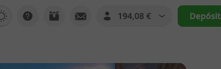
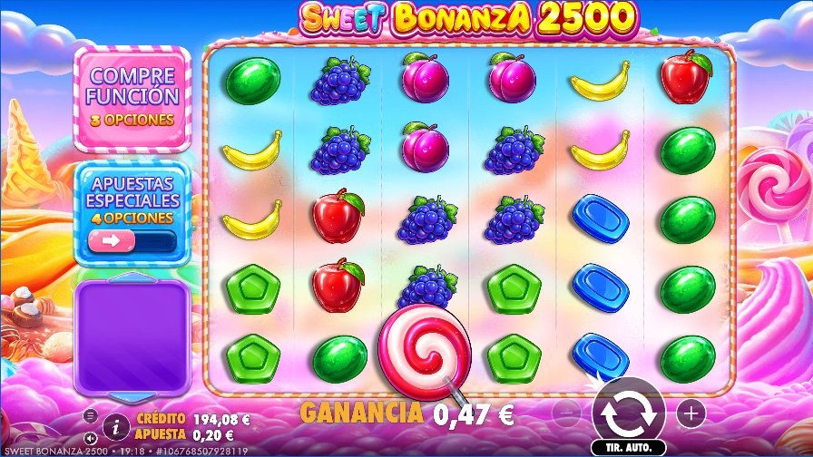
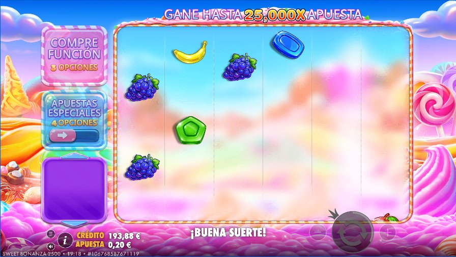
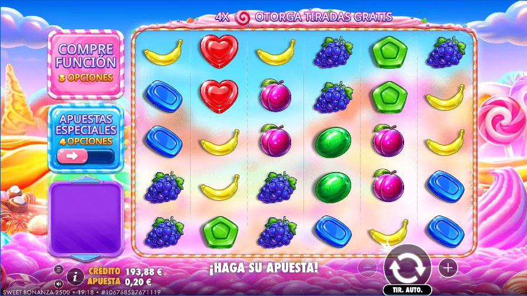
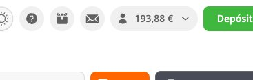
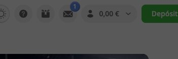
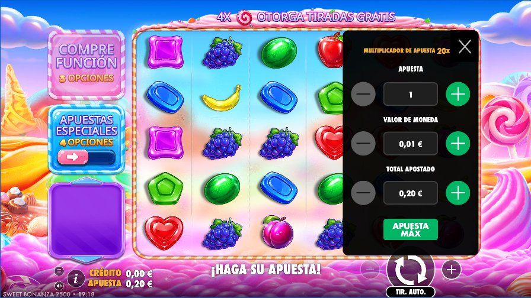
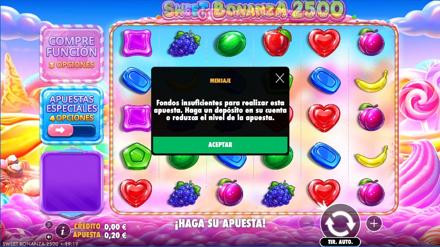
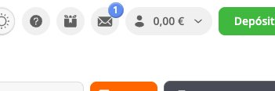

Informe de validación de juegos
10 de 10 comprobaciones superadas en sweet-bonanza-2500. Cada comprobación la confirman varios testigos independientes: lo que ve el jugador en la pantalla del juego y en la web de Betsson, lo que registra el servidor del juego y lo que el juego comunica a la web.
PASS (verde) = la pantalla lo confirma y ningún testigo lo contradice. FAIL (rojo) = no se pudo ver en pantalla o algún testigo contradice lo que ve el jugador; el motivo aparece en cada fila.
Escenario 1: tirada completada en Real Play ✓ PASS
Mercado es Proveedor Pragmatic PlayJuego sweet-bonanza-2500 Duración 65 sPerfil aprendido con claude-sonnet-5-5 el 2026-10-15 2026-10-15 17:17:59 UTC
Se apostaron 0,20 € en sweet-bonanza-2500. El juego giró y no se vio premio en pantalla. El crédito del juego pasó de 194,08 € a 193,88 € y el saldo de Betsson de 194,08 € a 193,88 €: cuadra con la regla del reto.
Capturas de lo que vio el jugador










Qué dijo cada testigo
| Comprobación | Resultado | Pantalla del juego | Movimiento de los rodillos | Cabecera de Betsson | Servidor del juego | Eventos del juego |
|---|---|---|---|---|---|---|
| La tirada empezó y terminó (pulsar el botón no basta). | ✓ PASS | ✓ confirmajugador | ✓ confirmajugador | · | ✓ confirma | ✓ confirma |
| La apuesta mostrada es la apuesta usada en la tirada. | ✓ PASS | ✓ confirmajugador | · | · | ✓ confirma | ✓ confirma |
| La divisa mostrada coincide con la del mercado. | ✓ PASS | ✓ confirmajugador | · | ✓ confirma | · | ✓ confirma |
| El saldo del juego es coherente con la tirada completada. | ✓ PASS | ✓ confirmajugador | · | · | ✓ confirma | ✓ confirma |
| El saldo de Betsson cuadra: después = antes - apuesta + premio. | ✓ PASS | ✓ confirma | · | ✓ confirmajugador | ✓ confirma | ✓ confirma |
jugador = lo que ve el jugador (pantalla, movimiento o web de Betsson): sin su confirmación no hay PASS. El resto corrobora: si contradice, es FAIL por discrepancia. Pasa el ratón por una celda para ver lo que dijo ese testigo.
Valores observados por cada testigo
| Hecho | Pantalla del juego | Cabecera de Betsson | Servidor | Eventos | |
|---|---|---|---|---|---|
| Saldo antes | 194,08 € | 194,08 € | 194,08 € | 194,08 € | ✓ coinciden |
| Apuesta | 0,20 € | — | 0,20 € | 0,20 € | ✓ coinciden |
| Premio | 0,00 € | — | 0,00 € | 0,00 € | ✓ coinciden |
| Saldo después | 193,88 € | 193,88 € | 193,88 € | 193,88 € | ✓ coinciden |
| Divisa | EUR | EUR | — | EUR | |
| Idioma | — | — | — | es |
Movimiento de los rodillos
Fracción de la zona de rodillos que cambia entre capturas consecutivas: el juego se movió y volvió al reposo (12 capturas, pico 0.28).
Cronología de la ejecución
- web abierta 7.6 s (acumulado 7.6 s)
- sesión iniciada 9.6 s (acumulado 17.2 s)
- saldo inicial leído 0.1 s (acumulado 17.3 s)
- juego abierto 16.3 s (acumulado 33.6 s)
- juego listo con apuesta mínima 15.4 s (acumulado 49.0 s)
- giro observado 7.1 s (acumulado 56.1 s)
- ronda cerrada 0.0 s (acumulado 56.1 s)
- marcador estable 2.0 s (acumulado 58.1 s)
- saldo final de Betsson 4.2 s (acumulado 62.3 s)
🧪 Prueba que falla a propósito (demostración; no cuenta en el resultado)
Prueba que falla a propósito: se vuelve a evaluar este escenario con lo observado de verdad, pero sumando 0.01 € al saldo final de Betsson, como si Betsson abonara mal la tirada. El validador debe detectarlo y marcar FAIL. No apuesta más ni cuenta para el resultado.
✓ El validador detectó el fallo: 1 comprobación(es) en FAIL, como se esperaba.
| Comprobación | Resultado | Pantalla del juego | Cabecera de Betsson | Servidor del juego | Eventos del juego |
|---|---|---|---|---|---|
| El saldo de Betsson cuadra: después = antes - apuesta + premio. | ✗ FAIL | ✗ contradice | ✗ contradicejugador | ✗ contradice | ✗ contradice |
jugador = lo que ve el jugador (pantalla, movimiento o web de Betsson): sin su confirmación no hay PASS. El resto corrobora: si contradice, es FAIL por discrepancia. Pasa el ratón por una celda para ver lo que dijo ese testigo.
- El saldo de Betsson cuadra: después = antes - apuesta + premio. ✗ FAIL: Lo que ve el jugador lo contradice: cabecera de Betsson: saldo 194.08 EUR - apuesta 0.20 + premio 0 = 193.88; Betsson muestra 193.89 EUR.
Eventos que el juego envió a la web
- +0.0 s gameRoundStart apuesta 0.2 · premio 0.47
- +0.0 s gameRoundStarted apuesta 0.2 · premio 0.47
- +0.0 s spinStarted apuesta 0.2 · premio 0.47
- +0.3 s post_updateBalance
- +0.3 s post_updateBalance
- +1.9 s spinEnded apuesta 0.2 · premio 0
- +1.9 s gameRoundEnded apuesta 0.2 · premio 0
- +1.9 s resultShown apuesta 0.2 · premio 0
- +1.9 s visualBalanceUpdate
- +1.9 s balanceChanged apuesta 0.2 · premio 0
- +1.9 s balanceChanged apuesta 0.2 · premio 0
Detalle de cada comprobación
| Comprobación | Resultado | Motivo | Testigos |
|---|---|---|---|
| La tirada empezó y terminó (pulsar el botón no basta). | ✓ PASS | Confirmado en pantalla y por todos los testigos. |
|
| La apuesta mostrada es la apuesta usada en la tirada. | ✓ PASS | Confirmado en pantalla y por todos los testigos. |
|
| La divisa mostrada coincide con la del mercado. | ✓ PASS | Confirmado en pantalla y por todos los testigos. |
|
| El saldo del juego es coherente con la tirada completada. | ✓ PASS | Confirmado en pantalla y por todos los testigos. |
|
| El saldo de Betsson cuadra: después = antes - apuesta + premio. | ✓ PASS | Confirmado en pantalla y por todos los testigos. |
|
Escenario 2: saldo insuficiente ✓ PASS
Mercado es Proveedor Pragmatic PlayJuego sweet-bonanza-2500 Duración 80 sPerfil aprendido con claude-sonnet-5-5 el 2026-10-15 2026-10-15 17:17:59 UTC
Con 0,00 € de crédito y una apuesta de 0,20 €, se pulsó girar en sweet-bonanza-2500: el juego mostró «Fondos insuficientes para realizar esta apuesta. Haga un depósito en su cuenta o reduzca el nivel de la apuesta.». Ningún saldo cambió.
Capturas de lo que vio el jugador








Qué dijo cada testigo
| Comprobación | Resultado | Pantalla del juego | Movimiento de los rodillos | Cabecera de Betsson | Servidor del juego | Eventos del juego |
|---|---|---|---|---|---|---|
| La tirada se rechaza en lugar de completarse como tirada pagada. | ✓ PASS | ✓ confirmajugador | ✓ confirma | · | ✓ confirma | ✓ confirma |
| El jugador ve un mensaje de saldo insuficiente en el idioma esperado. | ✓ PASS | ✓ confirmajugador | · | · | · | ✓ confirma |
| La divisa mostrada coincide con la del mercado. | ✓ PASS | ✓ confirmajugador | · | ✓ confirma | · | — no disponible |
| El saldo de Betsson no cambia. | ✓ PASS | · | · | ✓ confirmajugador | · | · |
| El saldo del juego no cambia. | ✓ PASS | ✓ confirmajugador | · | · | ✓ confirma | ✓ confirma |
jugador = lo que ve el jugador (pantalla, movimiento o web de Betsson): sin su confirmación no hay PASS. El resto corrobora: si contradice, es FAIL por discrepancia. Pasa el ratón por una celda para ver lo que dijo ese testigo.
Valores observados por cada testigo
| Hecho | Pantalla del juego | Cabecera de Betsson | Servidor | Eventos | |
|---|---|---|---|---|---|
| Saldo antes | 0,00 € | 0,00 € | — | — | ✓ coinciden |
| Apuesta | 0,20 € | — | — | — | ✓ coinciden |
| Saldo después | 0,00 € | 0,00 € | — | — | ✓ coinciden |
| Divisa | EUR | EUR | — | — | |
| Idioma | — | — | — | es |
Movimiento de los rodillos
Fracción de la zona de rodillos que cambia entre capturas consecutivas: sin giro: el juego no se movió (32 capturas, pico 0.00).
Cronología de la ejecución
- web abierta 7.7 s (acumulado 7.7 s)
- sesión iniciada 10.6 s (acumulado 18.3 s)
- saldo inicial leído 0.0 s (acumulado 18.3 s)
- juego abierto 15.6 s (acumulado 33.9 s)
- juego listo con apuesta mínima 26.1 s (acumulado 60.0 s)
- giro observado 11.8 s (acumulado 71.8 s)
- ronda cerrada 0.0 s (acumulado 71.8 s)
- marcador estable 1.9 s (acumulado 73.7 s)
- saldo final de Betsson 3.9 s (acumulado 77.6 s)
Eventos que el juego envió a la web
- +0.0 s autoplayEnded
- +0.0 s balanceTooLow apuesta 0.2 · premio 0
Detalle de cada comprobación
| Comprobación | Resultado | Motivo | Testigos |
|---|---|---|---|
| La tirada se rechaza en lugar de completarse como tirada pagada. | ✓ PASS | Confirmado en pantalla y por todos los testigos. |
|
| El jugador ve un mensaje de saldo insuficiente en el idioma esperado. | ✓ PASS | Confirmado en pantalla y por todos los testigos. |
|
| La divisa mostrada coincide con la del mercado. | ✓ PASS | Confirmado en pantalla; sin contradicciones. Testigos no disponibles: eventos del juego. |
|
| El saldo de Betsson no cambia. | ✓ PASS | Confirmado en pantalla y por todos los testigos. |
|
| El saldo del juego no cambia. | ✓ PASS | Confirmado en pantalla y por todos los testigos. |
|